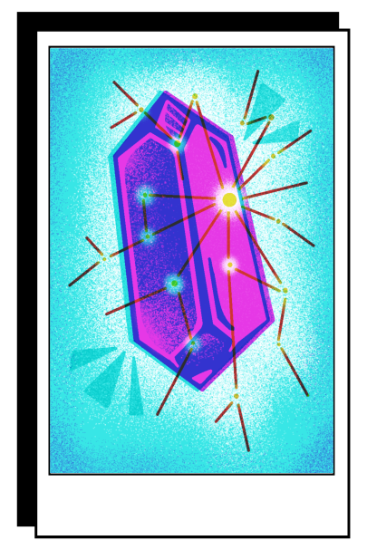

Software Development

As a software developer, I get to be a builder.
My most recent software development experience
was as a Software Engineer for Technical Content at Twilio. During my time
at Twilio, I developed technical content for the Twilio's Developer Voices blog:
May 2022 - Present (San Francisco, CA)
Improving
developer relations by encouraging developers to build through Twilio’s blog and products by
creating educational technical content
Built 7 applications using Twilio APIs and
products and wrote 7 corresponding technical tutorials
Boosted Twilio Blog's web
traffic with thousands of page views by writing technical articles
Collaborated with
dozens of developers to publish 15 new pieces by reviewing drafts & software applications
Research

As a researcher, I get to push the boundaries of knowledge.
My most recent research experience
was as a Machine Learning Researcher in materials science at the University of
South Carolina. There, I was able to worked on improving and adapting a machine learning
model with Python to predict vibrational frequencies between bonds in crystals:
May 2021 - Dec 2021 (Columbia, SC)
Provided solutions
in materials discovery by predicting molecular vibrational frequencies using a graph neural
network.
Trained, tested and evaluated over 40,000 crystal samples using Python
packages, such as NumPy, pandas, scikit-learn, PyTorch, and Pymatgen.
First
author on a research paper published by the American Chemistry Society by improving
machine learning models and creating graphic figures after using Python to manipulate and analyze
data results.
My first research experience was as a Physics Researcher in electromagnetism at the
University of South Carolina when I was in highschool:
June 2018 - 2019 (Columbia, SC)
Quickened research
progression by developing thin film, Hall bar samples for preliminary data
collection.
Mastered how to efficiently operate a wedge wire bonder, resulting in
training graduate researchers to facilitate future sample creation and creating detailed educational
material to train future researchers.
Presented early results of the research by
creating a research poster and slide presentation for SCGSSM Research Colloquium and SC Junior
Academy of Sciences.
Education
As an educator, I get to help others push the boundaries of knowledge.
Aside from my role as a
developer educator at Twilio mentioned above, I also worked as a Tutor for almost two
years at the University of South Carolina:
Aug 2020 - May 2022 (Columbia, SC)
Helped students
reach their full academic potential by tutoring over a dozen athletes in Computer Science, Math, and
Physics
Addressed the specific needs of students by adapting individualized
approaches and supplementary materials to communicate complex subjects